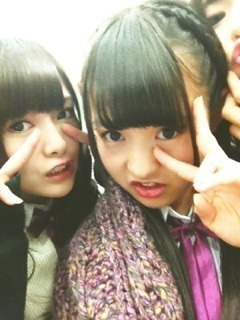

| 2012/11 03 Sat | 279回目*marika |
いつも読んでくださってる方、
初めて読んでくださった方
コメントしてくださった方、
ありがとうございます。
きゃーホワイトボートに名前が！

べびたんだけど笑まーりっか。
嬉しかった♪
今日は関西大学でライブでした。
ライブの前にみんなで
うろうろ散歩してみたり...
学園祭ていいなーって思った。
その後のライブは、想像以上に
すごい歓声でテンション
上がりまくって、全身汗びっしょり。
びっくりした

こんなに汗びっしょりになるとは
思わなかった
!!!
!!!
6曲だったから髪下ろしたのに
最後ぐちゃぐちゃなったー！うわーあ
今日は6曲。
昨日もだけど、
「狼に口笛を」も歌えたのが
すごく嬉しかったです。
正直すごい不安だったけど、
盛り上がってよかった。
まだお腹いたい。

後ろの一部なぜか真顔。

最近おねえたまにも
かまってもらってるんだよ。
まいやんと撮ってたらさりげなく
さゆりん入ってきた
 笑(右上)
笑(右上)
笑(右上)
今日は初めて横で編み込みしたよ。
さゆりんとおそろっちでした

違うんよ！
さゆりんがまねしてきたんよ！←
私も昨日さゆりんサイドポニー
まねしたからおあいこやん
2日間の学園祭ライブ。
本当に楽しかった！
ライブだいすきです。
マナーを守って楽しみましょう！
大学生のみなさん、スタッフさん、
乃木坂family！
本当にありがとうございました

チョコの生八ツ橋なんて邪道だ！
って言った私が
チョコの生八ツ橋買ったよ
 あれ
あれ
あれ
黒ごまも買ったよ。
明日は全員で撮影。
頑張りまりか！
.........
乃木ここ第三弾配信された！
これは...本当にごめんなさい; ;
ずっとかなに守ってもらってたー><
......
まりか
コメント(185)
2012/11/03 22:54